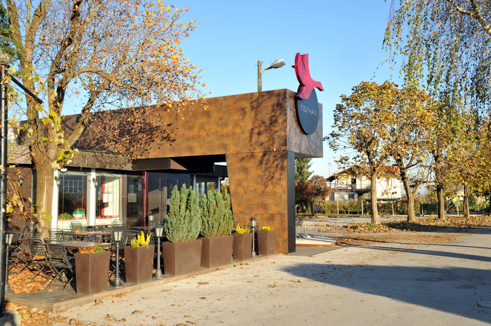
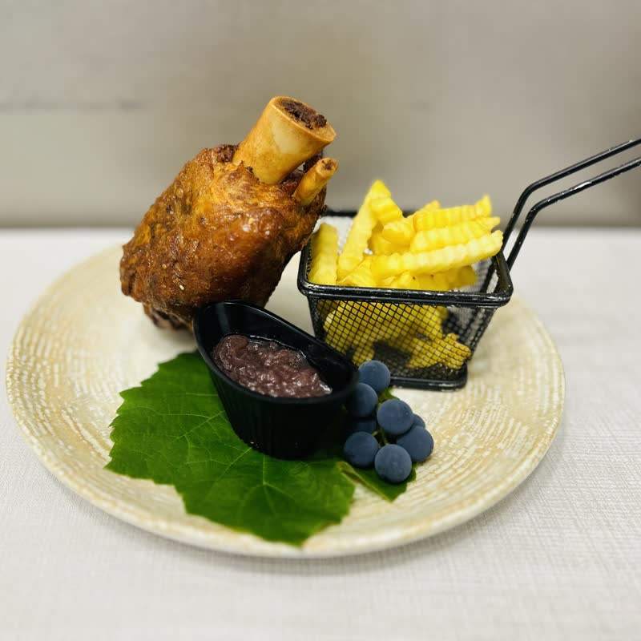
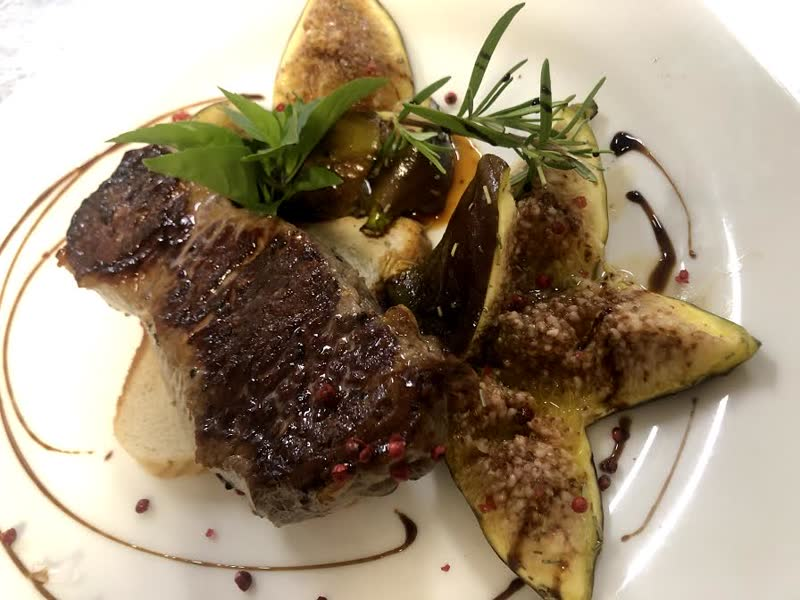
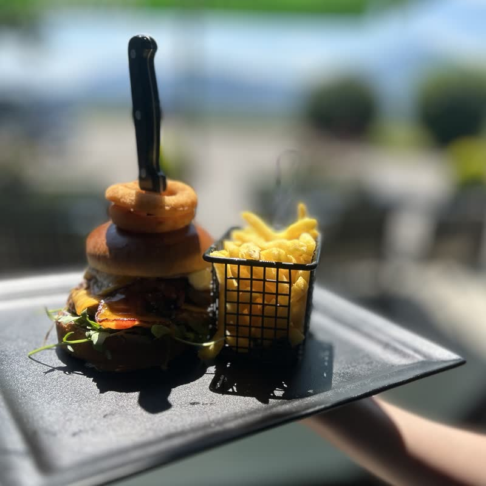
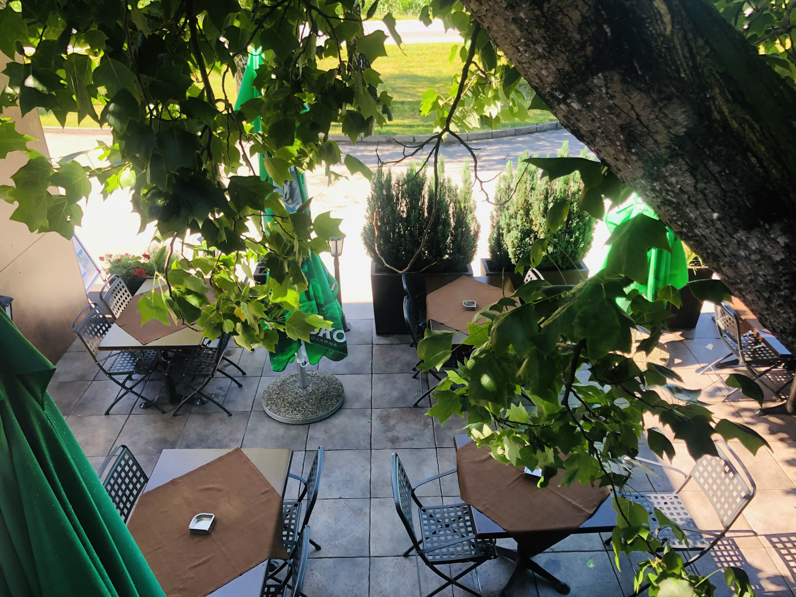
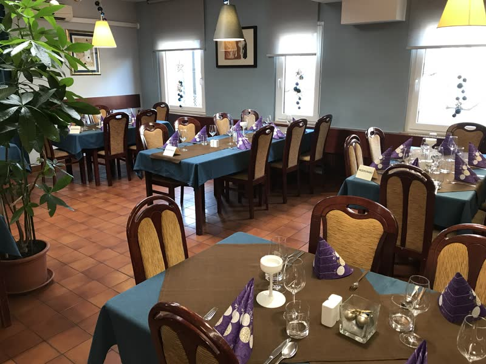
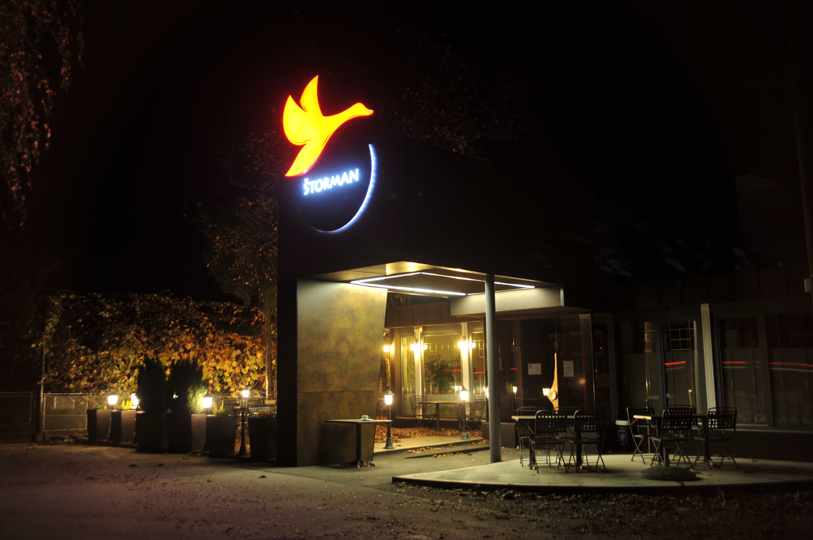

Med tednom
Malice in kosila
Vsak delovni dan tri dnevne malice, dodatne malice in dva dnevna menija. Malice do 14. ure, kosila do 16. ure.
Restavracija Štorman, Šempeter v Savinjski dolini
Topli dopoldanski obroki, dnevna kosila, jedi iz jedilnega lista in slavnostni meniji. Po navedbah podjetja se je gostinstvo Štorman začelo poleti 1980 v takratnem Bistroju Štorman, dva kilometra od avtocestnega izvoza.

Ponudba
Vsak delovni dan tri dnevne malice, dodatne malice in dva dnevna menija. Malice do 14. ure, kosila do 16. ure.

Trije sestavljeni meniji z juho, glavno jedjo, solato in sladico, objavljeni za vsak vikend posebej.

Jedi iz jedilnega lista, nekatere z oznako "S tradicijo", in vinska karta s slovenskimi kletmi. Jedilni list tudi v angleščini, nemščini in italijanščini.

Sestavljeni mesni, ribji in vegetarijanski meniji ter catering za poroke, jubileje in proslave, po navedbah na njihovi strani.
Med tednom
Primer: teden od 16. do 20. 11. 2026, kot objavljeno na storman.si
Malice postrežejo med tednom do 14. ure, kosila do 16. ure. Na pravi strani se ta seznam zamenja vsak teden; dnevna kosila in vikend meniji dobijo svoj zavihek.
Jedilni list
Nekaj jedi, kot so zapisane na njihovem jedilnem listu. Jedi iz začetkov nosijo oznako "S tradicijo", tako kot na njihovi karti. Cene na tem predogledu namenoma niso navedene.

Restavracija
Prijetna gostilna v osrčju Savinjske doline, doline zelenega zlata, hmelja. Lokal je ob zdaj že stari magistralni cesti in dva kilometra od avtocestnega izvoza.


O nas
"Če začneš svojo gostinsko-turistično pot pri petnajstih letih, delaš in se razdajaš s srcem, ugotoviš, da si svoje življenje posvetil gostinstvu in da bi se za to odločil vedno znova."
Po navedbah podjetja je Zvone Štorman restavracijo v Šempetru odprl poleti 1980 in vanjo vnesel kanček nemške natančnosti, ki se je je naučil v tujini, in zvrhano mero domače pristnosti. Družba Štorman, gostinstvo in storitve, d.o.o. je v register vpisana od 8. 3. 2013.

Skozi leto
Objave iz rubrike Aktualno na njihovi strani v letu 2026. Vsaka dobi na novi strani svojo podstran s pripadajočim menijem.
Odkrijte
Kontakt